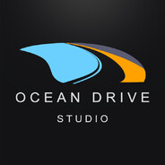
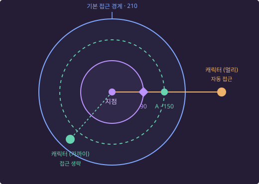

상호작용 / 연출
상황별 동작 선택부터 접근·위치·자세 보정까지 연결했습니다.
상호작용 설계 ↗대상별 실행 지점과 몽타주 데이터를 구성하고, 자동 접근·모션 워핑·상체 틸트를 공통 실행 경로로 처리했습니다.
김경재 Kim Kyungjae

OceanDriveStudio에서 1년 동안 근무 중인 언리얼 클라이언트 프로그래머입니다.
오션드라이브 스튜디오의 갓 세이브 버밍엄에서 게임 콘텐츠와 UI, 멀티플레이 동기화, 에디터 툴을 개발하고 있습니다.
02 / SKILLS
회사 프로젝트와 학생 시절 작품을 통해 쌓은 영역별 숙련도입니다.
| 영역 | 숙련 내용 |
|---|---|
| C++ / 구조 설계 | 공통 기능을 재사용하고, 의존성을 줄이는 구조를 설계합니다. 컴포넌트 분리, 인터페이스와 델리게이트를 통한 연결, 데이터와 실행 로직의 분리 |
| 엔진 / 에디터 | 데이터와 도구로 콘텐츠 제작을 지원합니다. Unreal Engine 5.5 · C++ / Blueprint · Data Asset / Table / Registry · Editor Utility Widget |
| 퍼포먼스 / 프로파일링 | 측정으로 병목을 찾고 고친 뒤 같은 조건에서 다시 재서 확인합니다. Unreal Insights로 인벤토리 갱신 구간의 프레임 저하를 추적했습니다. Scroll Box에서 위젯 캐시가 초기화되고 다시 그려지며 발생하던 히치를 확인하고, List View로 전환해 해결했습니다. |
| UI / 게임 플로우 | 화면 흐름과 위젯의 수명, 데이터 갱신을 관리합니다. UMG · Slate / MoviePlayer · MVVM · 화면 계층과 입력 포커스 · 위젯 풀링과 이벤트 수명 관리 |
| 네트워크 / 상태 관리 | 클라이언트 주도 로직으로 서버의 처리 비용을 줄입니다. Dedicated Server · Replication / RPC · 클라이언트 주도 처리 · 서버 처리 비용 절감 |
| 전투 / AI | 공격과 입력, 대상 상태를 연결해 전투 동작을 구현합니다. Behavior Tree · AI Perception · 공격 이벤트와 애니메이션 연결 · 데이터 기반 무기 · Motion Warping |
| 협업 / 버전 관리 | 팀의 기능 개발을 조율하고 변경 사항과 병합을 관리합니다. Perforce / Swarm 코드 리뷰 · Git 브랜치와 병합 관리 · 팀 프로젝트의 개발 범위·진행 상황 조율 |
03 / PROFESSIONAL EXPERIENCE
God Save Birmingham
게임 콘텐츠부터 UI와 개발 도구까지,
플레이와 제작의 기반을 구현했습니다.
중세 좀비 생존 시뮬레이션 프로젝트에서 C++과 Blueprint로 클라이언트 기능을 개발하고, 싱글플레이 기반 로직을 멀티플레이 환경에 맞게 확장했습니다.
대상별 실행 지점과 몽타주 데이터를 구성하고, 자동 접근·모션 워핑·상체 틸트를 공통 실행 경로로 처리했습니다.
FlowGraph와 공유·개인 컴포넌트, MVVM을 연동하고, 프레임 단위 큐로 신규 등록 연출을 순서대로 처리했습니다.
데이터 기반 UI 매니저로 화면 계층·입력 포커스·위젯 재사용을 관리하고, Slate와 MoviePlayer로 로딩 연출을 구현했습니다.
Editor Utility Widget으로 필요한 열을 다른 테이블로 복사·저장하고, 외부 CSV·JSON 입출력의 반복을 줄였습니다.
텍스트 파일을 JSON으로 직렬화해 Wordbee 서버와 연결하고, 프로젝트에 맞춘 키 발급 로직을 적용했습니다.
GAS 기반 주량 스킬과 화상 기능을 구현하고, 시설물의 애니메이션·상태가 클라이언트로 동기화되지 않던 문제를 해결했습니다.
상황에 맞는 몽타주를 선택하고, 자동 접근 후 모션 워핑과 상체 틸트로 실제 대상 위치에 맞추는 상호작용 실행 구조를 구현했습니다.
대상에 부착하는 컴포넌트로 행위별 위치·방향과 연출 설정을 구성했습니다. 행위별 로직은 실행 데이터를 전달하고, 공통 계층은 접근·선행 동작·몽타주 재생·자세 보정을 처리해 콘텐츠의 차이와 공통 동작을 분리했습니다.
도구·대상·행위의 태그와 캐릭터 자세, 조작점의 상대 높이로 후보를 좁혔습니다. 우선순위와 높이 조건으로 모션을 선택하고, 직접 지정한 동작이나 자동 매칭 실패 시의 대체 모션도 지원했습니다.
가장 가까운 유효 실행 지점을 고르고, 두 목적지 후보를 NavMesh에 투영해 이동 가능한 위치로 접근하도록 구성했습니다. 동작을 시작할 접근 범위와 몽타주의 워핑 목표를 나누고, 도착·진행 실패를 판정한 뒤 연출을 실행했습니다.
자세별 상체 기준점과 대상의 높이 차이·수평 거리로 보정 각도를 계산했습니다. 접근 경로와 판정 범위, 워핑 목표, 상체 틸트 기준점을 디버그 도형으로 표시해 위치·자세 보정을 확인할 수 있게 했습니다.
상호작용 구현 상세 보기 →FlowGraph로 진행 조건을 제어하고, 컴포넌트에서 공유·개인 등록 상태를 관리하며, ViewModel과 위젯으로 카테고리별 목록·읽음 표시·등록 연출을 제공하는 저널 기능을 구현했습니다.
카테고리·제목·본문·독백은 정적 데이터로, 등록·읽음 여부는 실행 상태로 분리했습니다. 커스텀 Flow 노드와 게임 이벤트를 연결해 기획자가 저널 콘텐츠와 진행 조건을 수정할 수 있게 구성했습니다.
메인·서브 저널은 모든 플레이어가 공유하고, 생존 저널은 플레이어별로 관리하도록 구성했습니다. 서버가 준비 상태와 중복 등록 여부를 확인한 뒤 목록을 갱신하며, 공유 목록은 전체 클라이언트에, 개인 목록은 소유 클라이언트에만 복제했습니다. 유형별 카테고리와 복제 범위는 분리하고, 등록과 목록 반영은 공통 컴포넌트에서 처리했습니다.
게임플레이에 등록 사실을 알리는 이벤트와 UI 갱신 이벤트의 역할을 구분했습니다. 같은 프레임에 등록된 항목은 묶어 연출 큐에 전달하고, 진행 중인 연출이 끝난 뒤 다음 묶음을 순서대로 표시하도록 했습니다. 기존 목록을 다시 반영할 때는 신규 등록 연출과 별도 경로로 처리했습니다.
UI 전용 데이터와 ViewModel로 카테고리별 목록을 구성하고, 최신 등록 순서와 선택 항목, 읽지 않은 항목 표시를 관리했습니다. MVVM으로 상태 변화를 위젯에 전달하고, 카테고리 전환 시 선택·스크롤을 정리하며 화면 생성·제거 주기에 맞춰 이벤트 연결을 관리했습니다.
저널 기능 구현 상세 보기 →타이틀 화면 → 로딩 화면 → 인게임 → 플레이 종료 및 타이틀 복귀로 이어지는 게임 플로우를 구현했습니다. 이 흐름에서 화면의 표시 순서와 입력 포커스, 위젯의 생성·재사용을 일관되게 관리하기 위해 데이터 기반 UI 매니저를 설계했습니다.
맵 전환의 동기 로딩으로 게임 스레드가 블로킹되는 구간에서는 일반 UMG 위젯의 Tick과 애니메이션 갱신에 의존한 연출이 진행되지 않습니다. 로딩 화면은 이 갱신 경로에 의존하지 않도록 Slate 위젯으로 구성하고 MoviePlayer에 연결했습니다. 게임 스레드가 로딩을 처리하는 동안에도 MoviePlayer의 별도 로딩 화면 갱신 경로를 통해 연출이 이어지도록 구현했습니다.
타이틀·인게임 UI와 로딩 UI의 실행 환경을 구분해 기술을 선택했으며, 타이틀 배경의 부드러운 패닝에는 베지어 곡선을 적용했습니다.
UGameInstanceSubsystem 기반 UI 매니저에서 타이틀·인게임 화면의 출력과 상태를 관리했습니다. 위젯 클래스와 레이어 정보를 Data Table로 관리하고, Layer / Stack 구조로 Z-Order와 입력 포커스를 제어했습니다. 로그창·인벤토리·HUD 팝업의 열림·닫힘과 상호 배타적인 표시 상태도 이 구조에서 처리했습니다.
관련 엔진 문서: MoviePlayer ↗ · UUserWidget ↗
Data Table 수정에 반복적인 외부 파일 입출력이 필요했던 흐름을 에디터 내부 작업으로 바꿨습니다.
언리얼 텍스트 파일을 읽고 JsonObject로 직렬화해 Wordbee 플러그인 서버와 통신하는 현지화 프로세스를 정리했습니다. FText의 로컬라이징 네임스페이스와 키가 중복되지 않도록 커스텀 키 발급 로직을 적용했습니다.
외부 플러그인의 내부 구조를 파악하고 프로젝트 요구에 맞게 수정·유지보수하는 경험을 쌓았습니다.
시설물의 애니메이션과 상태가 데디케이티드 서버에서 클라이언트로 동기화되지 않던 문제를 해결했습니다.
04 / INTERACTION
갓 세이브 버밍엄 · 상호작용 시스템상호작용 대상마다 시작 위치, 조작점의 높이와 재생할 동작이 달랐습니다. 대상 액터에 부착하는 컴포넌트로 위치·연출 데이터를 모듈화하고, 상황에 맞는 몽타주 선택 → 자동 접근 → 모션 워핑과 상체 틸트 보정으로 이어지는 실행 구조를 구성했습니다.

도해 크게 보기 ↗워핑 목표 거리·접근 거리·도착 여유 거리는 상호작용 오브젝트마다 개별 조정할 수 있고, 공통 기반 클래스에 기본값을 정의해 함께 사용할 수도 있습니다. 위 수치는 개념 설명용 예시이며, 기본 접근 경계는 접근 거리 150과 도착 여유 거리 60을 더한 210입니다. NavMesh 투영 결과에 따라 도착 범위를 보정하며, 도해의 원은 실제 경로가 아닌 수평 거리 기준을 나타냅니다.
행위별 어빌리티는 대상과 도구 등 실행에 필요한 데이터를 구성하고 실제 행위를 처리하도록 분리했습니다. 공통 실행 계층은 선택된 몽타주와 계산된 위치·방향을 받아 자동 접근, 선행 동작, 몽타주 재생과 자세 보정을 담당합니다.
실행할 행위와 몽타주, 시간, 접근·틸트 설정을 데이터로 구성해 콘텐츠의 선택 규칙과 공통 실행 경로를 분리했습니다.
게임 오브젝트에 상호작용 지점 컴포넌트를 여러 개 부착하고, 행위별 실행 위치와 방향을 설정할 수 있도록 구성했습니다. 해당 행위에 사용할 수 있는 지점 중 캐릭터와 수평 거리가 가장 가까운 지점을 선택하고, 별도 지점이 없으면 기본 위치를 사용하는 경로를 둡니다.
접근 거리와 도착 여유 범위, 몽타주의 워핑 목표 거리를 독립적으로 조정할 수 있게 해 콘텐츠 담당자가 오브젝트 배치와 행위 특성에 맞춰 연출을 설정하도록 했습니다.
채집은 인벤토리의 도구 보유 여부와 대상의 채집 유형으로 별도 모션을 선택합니다. 문·창문처럼 대상에서 방향별 애니메이션을 제공하는 경우도 지원해 행위의 특성에 맞게 선택 경로를 구성했습니다.
기본 접근 경계는 접근 거리와 도착 여유 범위를 더해 계산합니다. 캐릭터가 경계 안에 있으면 자동 이동을 생략하고, 밖에 있으면 접근을 실행합니다. 몽타주가 시작된 뒤에는 별도로 설정한 워핑 목표 거리로 위치를 정렬합니다.
시도한 행위에 연결된 실행 지점 중 캐릭터와 수평 거리가 가장 가까운 곳을 선택합니다.
실행 지점에서 캐릭터 방향으로 접근 거리만큼 떨어진 위치와 실행 지점 자체를 각각 NavMesh에 투영합니다. 투영된 두 위치 중 캐릭터와 직선 수평 거리가 짧은 쪽을 선택합니다.
접근 경계 밖에 있는 캐릭터를 선택한 목적지로 이동시킵니다. 후보가 벽이나 난간 밖에 놓여 투영 결과가 멀어지면 다른 후보를 사용할 수 있도록 구성했습니다.
목적지 좌표와의 정확한 일치보다 실행 지점의 도착 범위 진입을 기준으로 판정합니다. 이후 선행 동작과 본 동작을 순서대로 실행하고, 몽타주의 워핑 구간에서 목표 위치로 정렬합니다.
서버가 이동 명령과 접근 실패를 처리하며 서버와 소유 클라이언트가 도착을 판정합니다. 이동 방향, 거리 변화와 제한 시간으로 접근이 진행되지 않는 경우를 검사해 상호작용을 취소합니다.
접근 경로·판정 범위·워핑 목표와 상체 틸트의 기준점을 디버그 도형으로 표시해 위치 계산과 자세 보정을 확인할 수 있도록 했습니다.
자동 접근은 동작을 시작할 수 있는 범위까지 이동시키고, Motion Warping은 이후 몽타주의 루트 이동과 회전을 대상 배치에 맞춥니다. 대상 기준 정렬, 캐릭터가 자리할 위치, 손이 조작할 지점의 목표를 분리해 각각 다른 기준으로 계산합니다.
공통 실행 계층이 목표를 등록하고, 몽타주의 워핑 구간과 보정 로직이 실제 루트모션을 조정하도록 구성했습니다. 기존 루트 이동이 있으면 이동량을 변형하고, 없는 구간은 이징을 적용한 이동량을 생성합니다.
모션 선택은 발바닥 기준의 높이 구간을 판정하고, 상체 틸트는 자세별 상체 기준점에서 대상을 향하는 각도를 계산합니다. 높이 차이와 수평 거리로 보정 각도를 구하므로 대상 높이가 같아도 거리가 달라지면 자세가 달라집니다.
몽타주로 기본 동작을 선택하고 틸트로 연속적인 자세 보정을 더하도록 역할을 나눴습니다. 애니메이션 애셋 참조에서는 타입별 보정 포즈와 가산 블렌딩, 보정 강도를 조절하는 커브를 확인했습니다.
05 / JOURNAL
갓 세이브 버밍엄 · 저널 시스템FlowGraph로 진행 조건을 제어하고, 컴포넌트에서 등록 상태를 관리하며, ViewModel과 위젯으로 카테고리별 목록·읽음 표시·등록 연출을 제공하는 저널 시스템을 구현했습니다.
GameState에서 공유 등록 상태를 관리하고 모든 클라이언트에 복제했습니다.
PlayerState에서 개인 등록 상태를 관리하고 소유 클라이언트에만 복제했습니다.
카테고리·제목·본문·독백은 정적 데이터로 정의하고, 등록 상태와 읽음 여부는 실행 데이터로 분리했습니다. 초기화할 때 각 컴포넌트가 담당하는 카테고리의 저널 객체를 만들고 잠긴 상태로 시작하도록 구성했습니다.
저널 컴포넌트는 잠김·열림의 등록 상태를 관리하고 이후 진행 조건은 Flow 그래프에서 처리합니다. 게임 이벤트와 커스텀 Flow 노드를 연결해 기획자가 조건과 콘텐츠를 직접 수정할 수 있게 했습니다.
Flow의 등록 요청을 실행 주체에 따라 공유 또는 개인 저널 컴포넌트로 전달했습니다. 서버에서 초기화 준비와 중복 등록 여부를 확인한 뒤 상태를 변경하고, 클라이언트에는 갱신된 등록 목록을 복제했습니다.
서버가 관리하는 원본과 네트워크 전달 목록을 분리하고, 초기화와 상태 반영이 공통 경로를 거치도록 구성했습니다. 이미 적용한 저널을 기록해 전체 목록이 반복 전달되더라도 중복 반영하지 않도록 했습니다.
공유·개인 저널의 카테고리와 복제 범위는 상속과 가상함수로 분리하고, 등록·초기화·목록 적용은 공통 컴포넌트에 유지했습니다.
게임플레이에 등록 사실을 알리는 이벤트, 화면에 신규 항목을 전달하는 이벤트, 기존 목록을 다시 반영하는 이벤트의 역할을 구분했습니다. 등록 사실은 Flow 진행 조건이나 후속 HUD 표시에도 연결했습니다.
같은 프레임에 등록된 저널은 하나의 묶음으로 모아 다음 프레임에 큐로 전달했습니다. 현재 연출이 진행 중이면 다음 묶음을 대기시키고, 연출이 가능한 시점에 순서대로 처리하도록 구성했습니다.
신규 등록 이벤트는 목록 추가와 팝업 연출 양쪽에서 사용하므로, 알림을 막기 위해 이벤트 자체를 차단하면 목록도 누락될 수 있습니다. 기존 상태의 목록 갱신은 별도 경로로 반영해 신규 등록 연출과 분리했습니다.
컴포넌트의 객체를 화면에서 직접 공유하지 않고, 전달된 데이터로 UI 전용 객체를 구성했습니다. ViewModel에서 메인·서브·생존 목록을 분류하고 중복 추가를 방지하며, 최신 등록 항목이 먼저 보이도록 목록을 제공했습니다.
저널 기능 구현에 더해 플러그인 실행 상태를 기존 저장 시스템에 통합하고, 복원된 상태와 신규 등록을 구분하는 흐름을 설계했습니다.
GameState / PlayerState의 저널 컴포넌트는 기존 객체 직렬화 경로에 통합하고, FlowGraph의 실행 상태는 별도 저장 섹션에 통합했습니다.
서버가 확정한 개인 저널 초기 목록을 Client RPC로 전달하고, 복제와 RPC의 도착 순서에 관계없이 초기 목록을 확보한 뒤 연출 여부를 판정했습니다.
Unreal Engine C++ 기반으로 저널의 세이브·로드를 설계하고 구현했습니다. GameState의 공유 저널과 PlayerState의 개인 저널 컴포넌트는 기존 직렬화 경로를 활용하고, 플러그인의 진행 상태는 별도 저장 섹션으로 분리했습니다.
저장 데이터를 읽는 시점과 Flow를 실행할 수 있는 시점을 분리했습니다. 로드 시 원본 Flow 애셋의 비동기 로딩 완료와 소유자 준비 상태를 함께 확인해 실행 시점을 제어했습니다.
애셋 경로, 실행 인스턴스와 플레이어별 저장 데이터를 연결해 복원 대상과 실행 주체가 준비된 이후 진행 상태를 적용하도록 구현했습니다.
저장 데이터 구조와 읽기 순서가 일치하지 않아 로딩 지연이 발생했습니다.
구간별 시간을 측정하고 바이너리 데이터를 분석해, 누락된 저장 섹션으로 인해 이후 데이터를 잘못 해석하는 지점을 확인했습니다. 저널 데이터가 없는 경우에도 저장 구조를 유지하도록 개선했습니다.
데이터의 유무와 저장 포맷의 구조를 분리하고, 쓰기와 읽기 경로가 동일한 섹션 순서를 유지하도록 다뤘습니다.
06 / STUDENT PROJECTS
재학 중 제작한 개인·팀 프로젝트입니다.
게임을 완성하며 시스템 설계와 협업 경험을 쌓았습니다.
무기와 장비를 조합해 성장하고 최종 보스에 도전하는 소울라이크 게임
인벤토리 슬롯에 무기 인스턴스를 보관해 교체 때 반복되는 생성·파괴를 줄였습니다. 다만 슬롯이 많거나 교체가 드물면 메모리 사용이 늘고, Visibility만 변경해서는 Tick과 Collision 비용까지 차단되지 않는 한계를 확인했습니다.
다음 구현에서는 풀의 동적 확장·축소와 Tick / Collision 명시적 제어를 적용하고, 프로파일링으로 재사용의 이득과 유지 비용을 비교할 계획입니다.
좀비와 전투하고 NPC의 대화와 단서를 통해 백신 개발자를 찾는 추리 FPS
담당 범위: 팀장 · Git 프로젝트 관리 · UI(작전판, HUD, 강화판 제외)와 단서 데이터 관리 로직을 제외한 게임 요소의 C++ 개발
기반 클래스에 총기의 공통 기능을 두고 파생 클래스로 각 총기를 구현했습니다. 무기가 늘 때마다 클래스가 필요해지는 한계를 경험했고, 이후 Black Space에서는 Data Asset 교체로 무기를 확장하는 구조로 발전시켰습니다.
절차적으로 생성되는 맵에서 다양한 무기와 스킬로 전투하는 쿼터뷰 로그라이크
담당 범위: 팀장 · Git 프로젝트 관리 · PCG 맵 생성 알고리즘을 제외한 게임 요소의 C++ 개발
스킬을 함수로 구현하면서 기능이 늘수록 코드가 커지고 수정 복잡도가 증가하는 한계를 확인했습니다. 후속 설계에서는 공통 실행과 큐 처리를 담당하는 범용 구조를 두고, 데미지·범위·이펙트를 데이터로 분리하는 방향을 고려했습니다.
07 / STUDENT ACTIVITIES